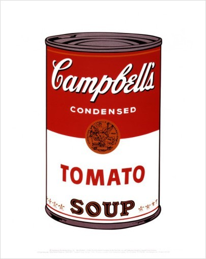

앤디 워홀 - 캠벨 수프 소개
2520 장기원 제작
작품 이미지
Campbell's Soup Cans By. Andy Warhol
▼ 동영상 해설
영상 스크립트
원통형 캔, 빨간색과 하얀색으로 구분되어있는 통조림. 앤디 워홀이 그린 켐벨 수프이다.
이 그림은 팝아트의 대표 작품이라고 할 수 있을 만큼 유명한 그림이다.
앤디가 켐벨 수프를 선정하고 그린 이유에 대해 이렇게 답하였다.
'나는 그것을 주로 마시곤 했습니다. 또한 20년동안 내 점심으로 먹기도 했고요.'
자신에게 가장 익숙한 제품을 작품으로 만들었는데 대중에게도 익숙한 제품이였기에 사람들은 이 작품을 보고 친근감을 느끼기도 했다.
켐벨 수프 캔은 여러가지 맛이 존재하는데 앤디 워홀은 이러한 점을 놓치지 않고 모든 맛의 캔들을 각각 하나의 캔버스에 그린 후
작품을 그린 캔버스들을 모아서 하나의 작품으로 치환하였다. 하나의 작품을 여러 개로 그린 점을 통해 당시 2차 산업 혁명으로 인한 대량 생산의 시대를 표현했다.
작품 추가 설명
제작일 : 1961년 11월 ~ 1962년 4월
특징 : 검정색 선을 진하게 그려서 면과의 구분을 확실히 할 수 있게 했으며 적은 색상을 이용하여 그렸음.